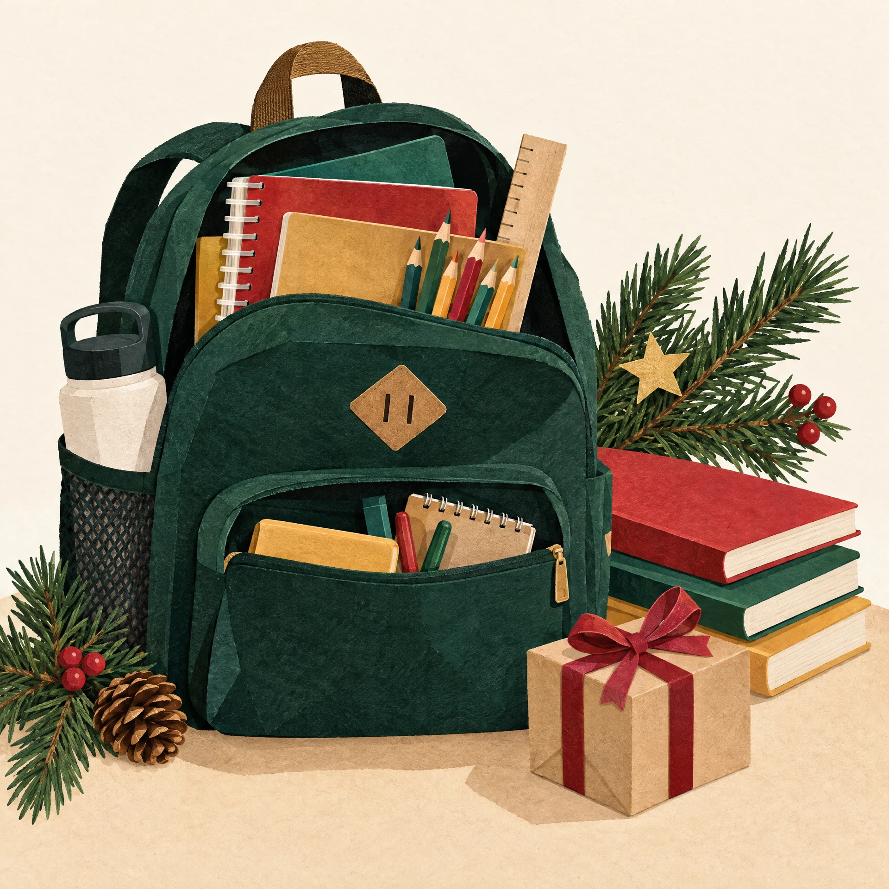

01 / 03Educação & autonomia
Uma mochila pronta
O material escolar é também uma mensagem: você pode começar. Entregamos kits escolhidos com cada criança, para que o retorno às aulas venha com vontade, organização e menos preocupações para a família.
Como participarApadrinhe um kit de volta às aulasCom R$ 85, você monta uma mochila completa. Também dá para doar materiais ou organizar uma coleta na sua escola.
Quero apoiar